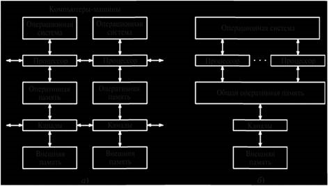

Конвейеризация. Выполнение команды можно разделить на два этапа: выборка из основной памяти и собственно выполнение. Известно, что этап выборки занимает сравнительно длительное время. Для его сокращения в 1959 г. при разработке IBM Stretch был предложен принцип выборки с упреждением, согласно которому команды выбираются из памяти заранее и помещаются в буферный регистр. Это происходит, когда процессор не занимает внешнюю шину, связывающую его с основной памятью. При выполнении программы по мере необходимости команды вызываются из буфера, благодаря чему сокращается время их выполнения. Позднее идея конвейеризации получила дальнейшее развитие. При конвейерной технологии выполнение команды разделяется на несколько стадий, или этапов (например: выборка команды, декодирование, выборка операнда, непосредственно выполнение, возврат), которые реализуются одновременно соответствующими аппаратными средствами.
Если время выполнения одной команды Т с, то при отсутствии простоев и ожиданий конвейерный принцип обеспечивает выполнение п/Т команд в секунду, где п – число стадий (ступеней) конвейера.
Суперскалярная технология. Использование в процессоре нескольких конвейеров позволяет значительно повысить его производительность. В качестве примера может служить структура с двойным конвейером из пяти стадий каждый (Pentium MMX), в котором для вызова команд используется общий блок, выбирающий из памяти сразу две команды. Один из конвейеров может выполнять произвольные команды, его называют главным или и-конвейером. Второй конвейер (v-конвейер) выполняет только простые команды с целыми числами, а также одну простую команду с плавающей точкой.
Загружаемые в конвейеры команды не должны конфликтовать при использовании ресурсов (например, регистров), кроме того, ни одна из них не должна зависеть от результата выполнения другой команды. Разработаны правила, по которым определяется совместимость команд для параллельного исполнения. При несовместимости команд выполняется только одна из них (в и-конвейере). Другая команда откладывается для создания пары с одной из следующих команд. Команды выполняются по порядку. Для объединения команд в совместимые пары используются специальные компиляторы.
Сначала двойные конвейеры (как и одинарные) использовались только в компьютерах с архитектурой RISC. Позднее два конвейера появились в процессорах Pentium с CISC архитектурой. Благодаря этому программы для операций с целыми числами стали выполняться почти в 2 раза быстрее, чем на компьютерах с 486-м процессором, имеющим такую же тактовую частоту.
Переход к четырем конвейерам потребовал бы разработки сложных аппаратных средств. Вместо этого стали использовать один конвейер (например, Pentium II) с большим количеством функциональных блоков (рис. 3.1). Возможность появления такой структуры, которую называют суперскалярной архитектурой, обусловлена тем, что выполнение команды на первых трех стадиях конвейера занимает
Рис. 3.1. Структура процессора с функциональными блоками
незначительное время. Поэтому функциональные блоки четвертой стадии загружены работой. Процесс выполнения команд с использованием суперскалярной архитектуры называют суперскалярной технологией.
Параллелизм на уровне процессоров. Конвейерная и суперскалярная технология позволяют увеличить производительность компьютера не более чем в 5...10 раз. Для дальнейшего повышения производительности необходимо создавать многомашинные и многопроцессорные системы. Рассмотрим их особенности.
Многомашинные системы содержат несколько компьютеров, каждый из которых имеет свою операционную систему и располагает собственными средствами для обмена информацией. Реализация обмена информацией происходит путем взаимодействия операционных систем машин между собой. Это ухудшает динамические характеристики процессов межмашинного обмена данными. Применение многомашинной структуры позволяет повысить надежность компьютерной системы, так как при отказах в одной машине обработку данных могут продолжать другие.
К основным особенностям таких систем (рис. 3.2, б) можно отнести следующие:

Рис. 3.2. Многомашинная (а) и многопроцессорная (б) системы
В многопроцессорных системах могут быть получены более высокие показатели, характеризующие:
Многопроцессорные системы представляют собой основной путь построения систем сверхвысокой производительности, в то время как многомашинные системы ориентированы в первую очередь на повышение надежности и живучести.
При разработке новых компьютерных систем параллельного действия возникают вопросы, связанные с выбором процессорных элементов, модулей памяти и способа их взаимодействия. В настоящее время компьютерные системы конструируются из серийно выпускаемых частей. Их состав во многом зависит от того, какие функции выполняют отдельные части и каковы ограничения.